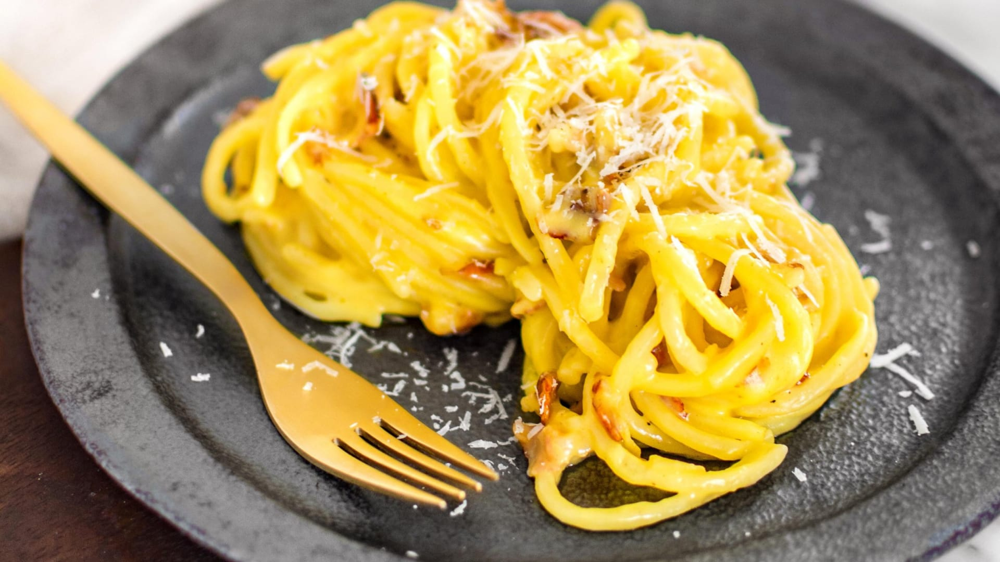

Špagety carbonara

Popis
V překladu znamená název carbonara špagety po uhlířsku, a tak se nabízí vysvětlení, že si je připravovali italští uhlíři. Pravděpodobnější však je, že jídlo vzniklo v poválečném období v Římě jako způsob zpracování vajec a slaniny z amerických zásob. Není tak vlastně jasné, jestli ho vymysleli Američané nebo Italové. Slaninu vybírejte pouze italskou – pancetta se vyrábí nasolením vepřového boku, guanciale pochází z líček. Oproti české slanině se neudí, ale pouze se nakládají do soli, případně dalšího koření nebo pepře.
Ingredience
- špagety 200g
- uzená pancetta
- parmezán 50g
- žloutek 3 ks
Postup
- Ve velkém hrnci zahřejte dostatečné množství vody, alespoň 3 l. Osolte ji a po 1 minutě vsypte těstoviny. Vařte je na nejvyšším stupni podle návodu na obalu akorát na skus, tzv. al dente.
- Slaninu nakrájejte na proužky nebo kostičky, parmazán nastrouhejte najemno. Žloutky lehce prošlehejte se sýrem a opepřete. Přilijte 1,5–2 sběračky vroucí vody z těstovin a promíchejte.
- V pánvi rozehřejte máslo a 1 lžičku olivového oleje, vsypte slaninu a opečte ji dokřupava. Uvařené těstoviny slijte, ale vodu nevylévejte. Těstoviny přidejte do pánve, přilijte 1 sběračku vody, promíchejte, povařte 1 minutu, odstavte a nechte 2 minuty odpočinout. Vlijte žloutkovou směs a promíchejte, aby vznikla hladká omáčka, která obalí těstoviny. Rozdělte na talíře a posypte parmazánem.
Home